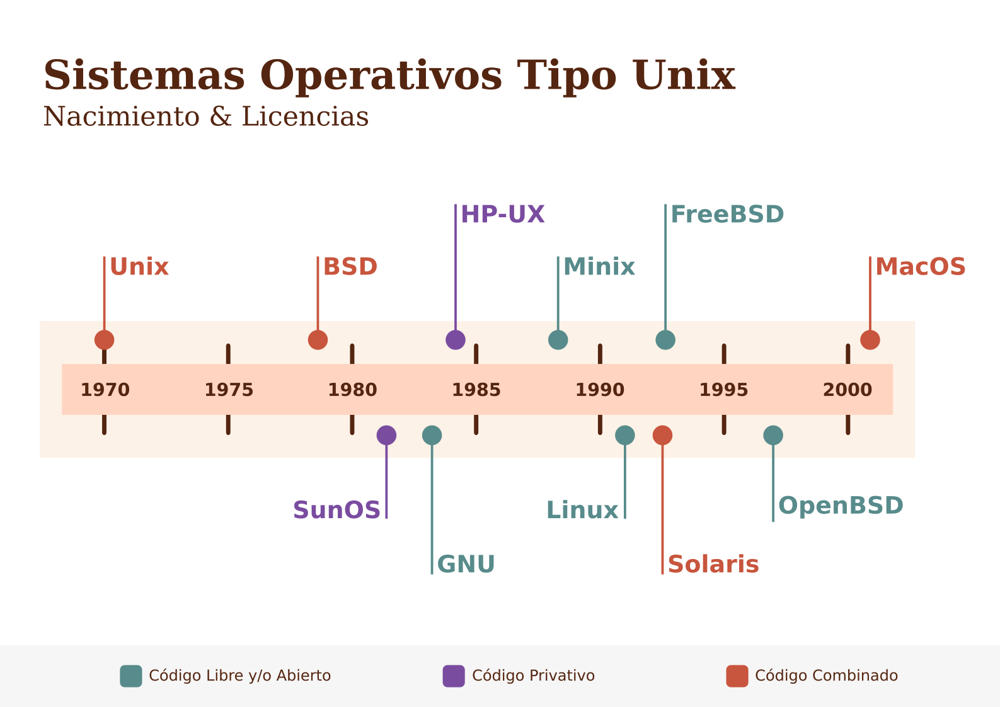

Timeline
Linea Temporal del nacimiento de sistemas operativos tipo Unix

Funte de datos: History of Unix, Wikipedia
Circular Dendrogram
Dendrograma circular de géneros literarios de libros populares
Funte de datos: Thompson, Tonya. 2019. 144 Genres and Subgenres for Fiction Writing
Contour Plot
Gráfico de contorno de la cantidad de respuestas a los Tweets de Joe Biden comparado con likes y retweets
Funte de datos: Vopani. 2020. Joe Biden Tweets (2007-2020). Kaggle